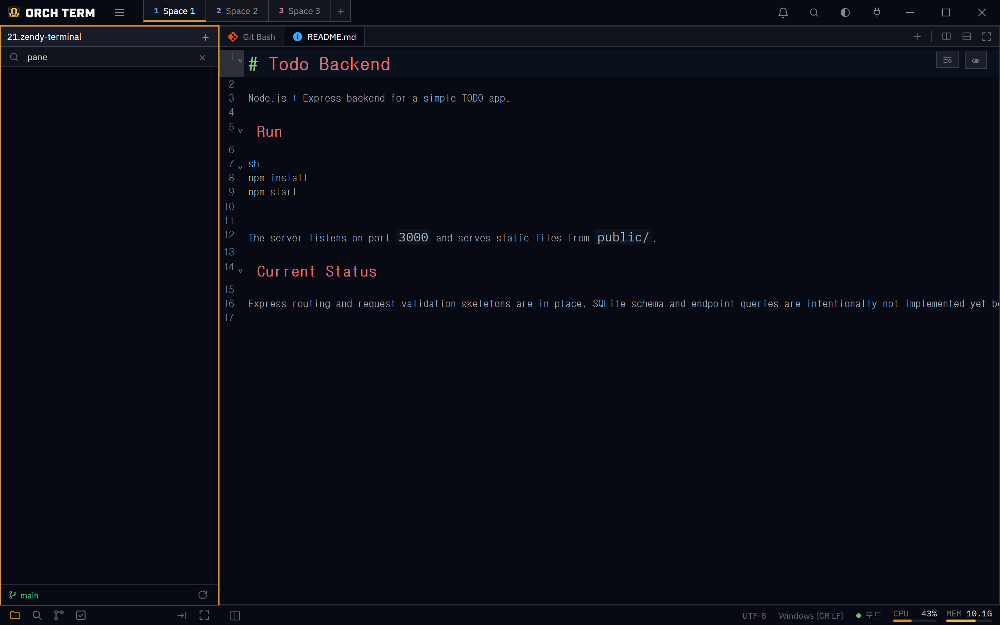
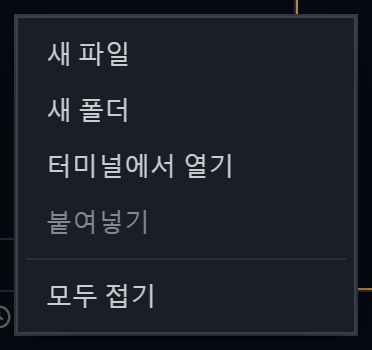

핵심 기능 · 탐색기
탐색기
좌측의 파일 탐색기. 여러 프로젝트 루트를 한 창에서 전환하고, 키보드만으로 트리를 누비며, 인라인 생성·이름변경·드래그&드롭으로 파일을 다룹니다.
멀티 프로젝트 전환
탐색기 헤더의 프로젝트 이름을 클릭하면 드롭다운이 열려 등록된 여러 프로젝트 루트 사이를 전환합니다. + 버튼으로 새 루트를 더합니다. 목록과 활성 루트는 저장되어 재시작 시 복원됩니다.

키보드 네비게이션 · 멀티 셀렉트
마우스 없이 트리 전체를 다룹니다. 방향키로 항목을 오가고, 글자를 그냥 입력하면 이름이 일치하는 항목으로 점프합니다(타입어헤드). 여러 항목을 멀티 셀렉트해 한 번에 미리보기 탭으로 열 수 있습니다.
exp…) 일치하는 이름으로 점프합니다.| 키 | 동작 |
|---|---|
| ↑ / ↓ | 트리 항목 이동 |
| Enter | 항목 선택 · 열기 |
| Esc | 드롭다운 / 검색 닫기 |
| 글자 입력 | 타입어헤드 — 일치하는 이름으로 점프 |
파일 검색 — 검색바에 입력하면 현재 폴더만이 아니라 하위 폴더 전체에서 파일명 부분일치로 찾습니다. node_modules·.git·target·dist 같은 무거운 폴더는 기본 제외됩니다.
인라인 생성 · 이름변경
선택한 위치에서 곧바로 파일·폴더를 만들고, 그 자리에서 이름을 바꿉니다. 생성 시 src/utils/new.ts처럼 중첩 경로를 한 번에 입력하면 빠진 폴더가 함께 만들어집니다.
utils/new.ts처럼 중첩 경로를 넣으면 빠진 폴더까지 만듭니다.항목 위에서 이름변경을 시작하면 그 자리에서 편집합니다. 열려 있는 탭도 함께 동기화되어 이름변경·삭제가 그대로 반영됩니다.
드래그 & 드롭 — 경로 삽입
파일·폴더를 터미널 패널 위로 드롭하면 그 항목의 절대 경로가 커서 위치에 삽입되고, 드롭하는 동안 패널이 강조됩니다. "attach as context"로 끌면 같은 동작에 프로젝트 상대 경로를 넣습니다.
좌 · 우 배치 전환
탐색기 푸터의 / 버튼으로 탐색기를 화면 좌↔우로 옮깁니다. 위치는 저장되어 재시작 시 복원됩니다.
접기/펴기는 상태바에 — 탐색기 열기/닫기는 헤더가 아니라 하단 상태바 좌측의 항상 보이는 버튼입니다. 접힘 여부와 폭은 Space별로 보존되어 재시작해도 복원됩니다.
빈 영역 우클릭 → 터미널 열기
탐색기의 폴더나 빈 영역을 우클릭하면 터미널에서 열기가 나타납니다. 폴더 위에서는 그 폴더에서, 빈 영역에서는 프로젝트 루트에서 새 터미널이 열립니다. 같은 메뉴에 잘라내기·복사·붙여넣기·복제, 탐색기에서 보기, 경로 복사, 모두 접기도 있습니다.

시스템 앱으로 열기 — 바이너리/비텍스트 파일은 OS 기본 앱으로 열리고, OS 탐색기에서 해당 파일이 선택된 채 열 수도 있습니다.